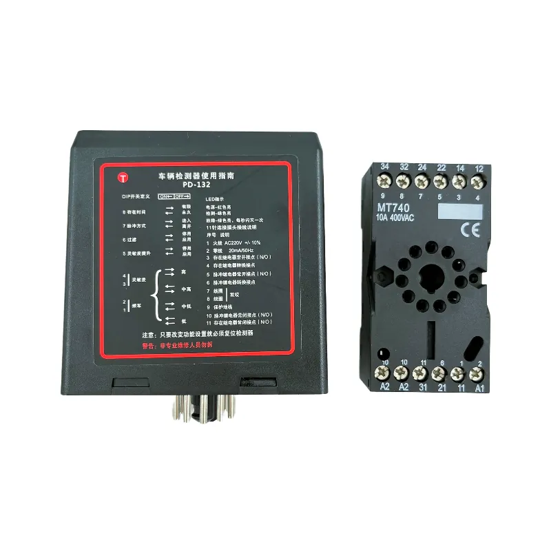
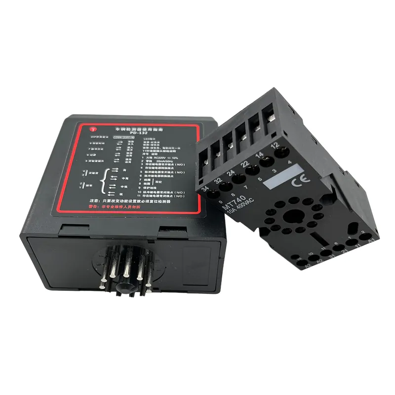
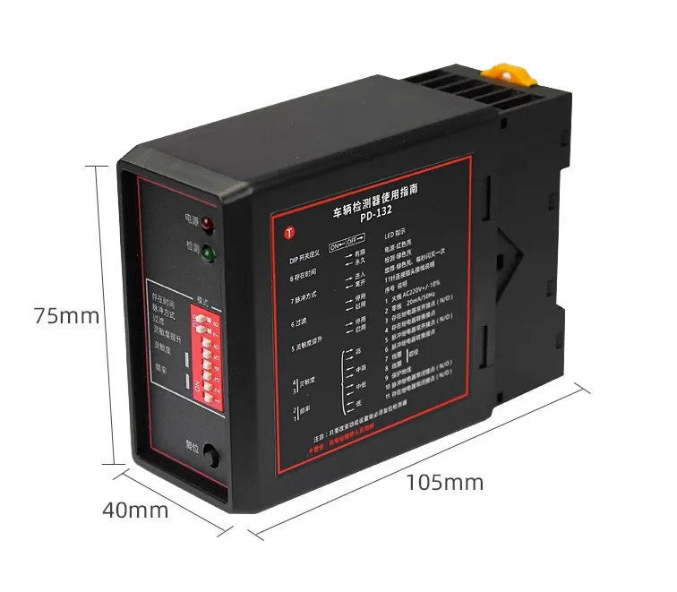
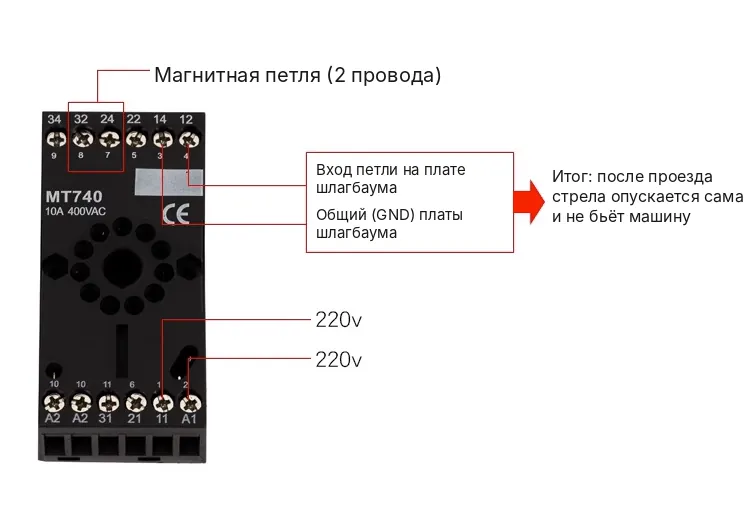
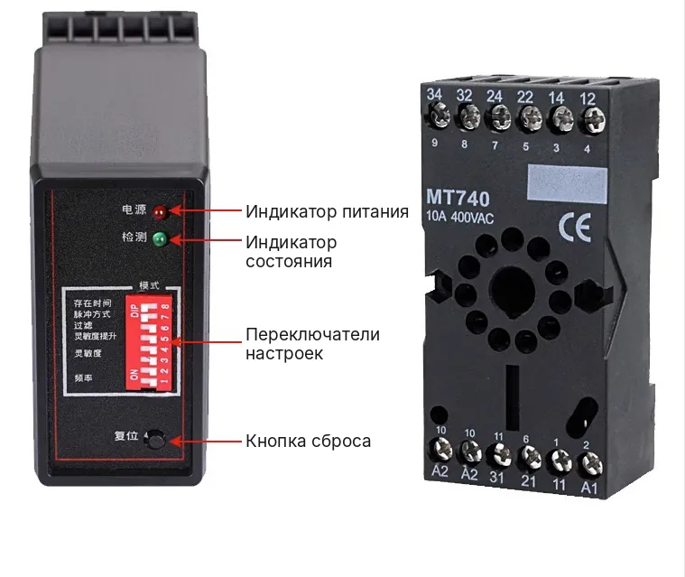
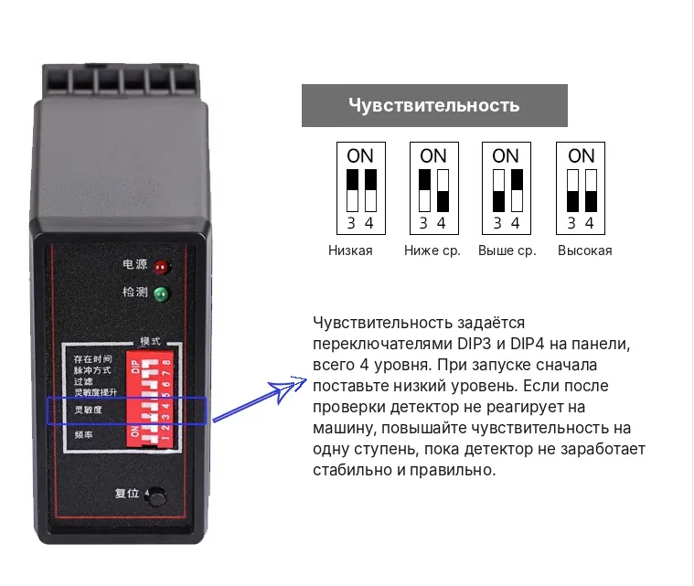
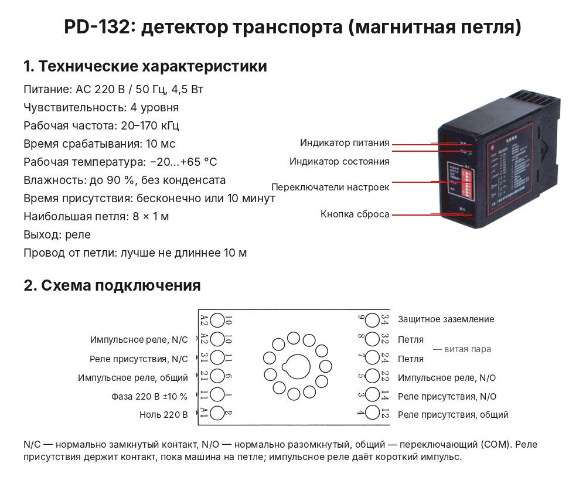
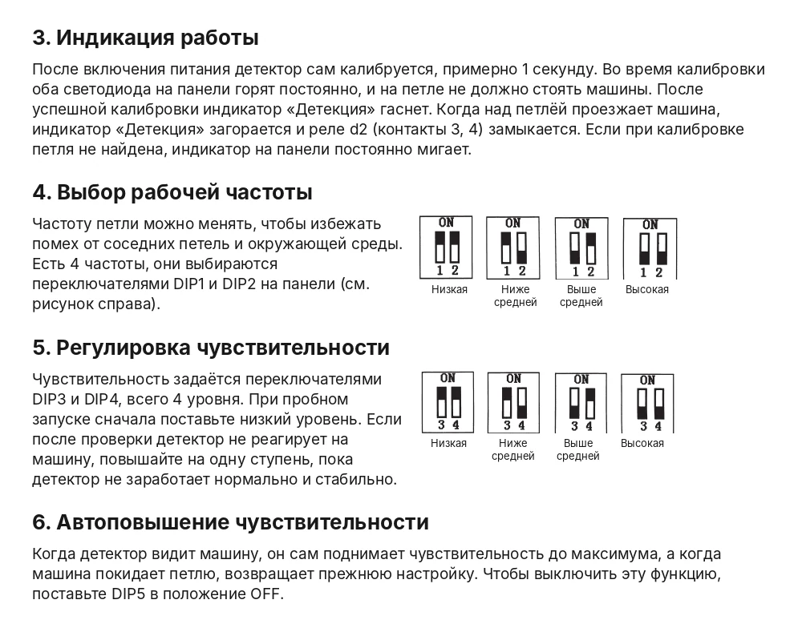
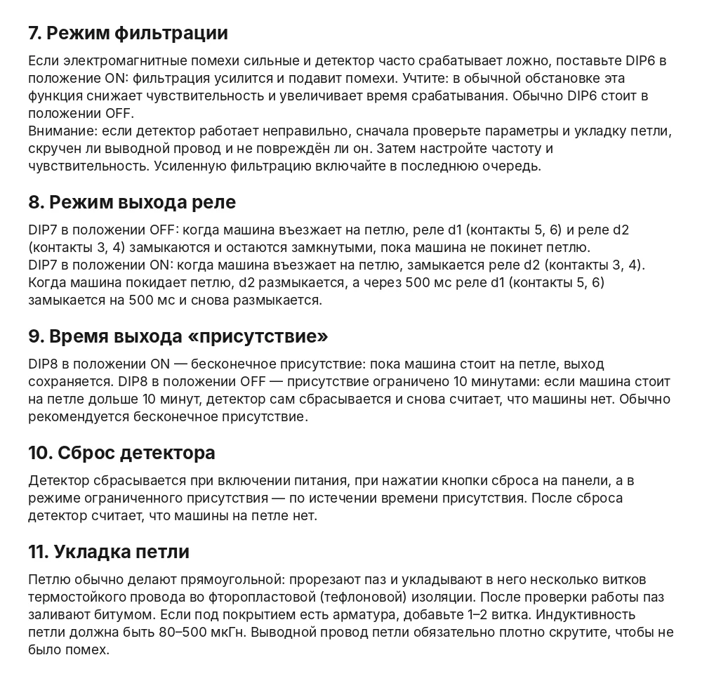
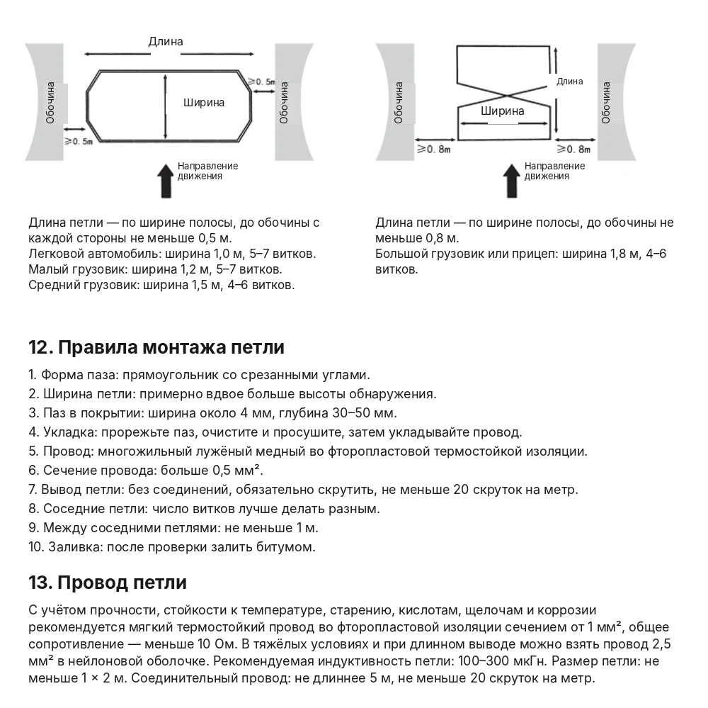

Магнитные петли: автоматический выездМагниттік ілмектер: автоматты шығуInduction loops: automatic exit
Магнитная (индукционная) петля укладывается в дорожное покрытие перед шлагбаумом на выезде. Когда автомобиль наезжает на петлю, детектор подаёт сигнал на блок управления, и шлагбаум открывается автоматически. Пульт или телефон водителю не нужен.Магниттік (индукциялық) ілмек шығу жолындағы шлагбаумның алдына жол жабынына салынады. Көлік ілмекке шыққанда детектор басқару блогына сигнал береді, шлагбаум автоматты түрде ашылады. Жүргізушіге пульт немесе телефон қажет емес.A magnetic (induction) loop is laid in the road surface in front of the exit barrier. When a car drives onto the loop, the detector signals the control unit and the barrier opens automatically. The driver needs no remote or phone.










Как это работаетБұл қалай жұмыс істейдіHow it works
Автомобиль на петлеКөлік ілмектеCar on the loop
Автомобиль подъезжает к шлагбауму изнутри территории и наезжает на петлю.Көлік аумақтың ішінен шлагбаумға жақындап, ілмекке шығады.A car approaches the barrier from inside the site and drives onto the loop.
Сигнал детектораДетектор сигналыDetector signal
Детектор транспорта фиксирует автомобиль и подаёт команду «Открыть».Көлік детекторы көлікті тіркеп, «Ашу» пәрменін береді.The vehicle detector registers the car and sends the “Open” command.
ВыездШығуExit
Шлагбаум открывается, автомобиль выезжает, стрела закрывается.Шлагбаум ашылады, көлік шығады, жебе жабылады.The barrier opens, the car leaves and the boom closes.
Петля устанавливается только на выезд: она открывает шлагбаум любому автомобилю. Въезд на территорию остаётся по пульту или через Bluetooth-модуль ZMK, а для скорой помощи и пожарных можно добавить SOS-детектор.Ілмек тек шығуға орнатылады: ол шлагбаумды кез келген көлікке ашады. Аумаққа кіру пульт немесе ZMK Bluetooth-модулі арқылы жүзеге асады, ал жедел жәрдем мен өрт сөндірушілер үшін SOS-детекторды қосуға болады.The loop is installed on the exit only, as it opens the barrier for any car. Entry stays by remote or the ZMK Bluetooth module, and an SOS detector can be added for ambulances and fire engines.
Работы и услугиЖұмыстар мен қызметтерWorks and services
Монтаж петлиІлмекті орнатуLoop installation
Нарезка паза в асфальте или бетоне, укладка кабеля, герметизация шва.Асфальтта немесе бетонда ойық кесу, кабель төсеу, тігісті герметиктеу.Cutting a slot in asphalt or concrete, laying the cable, sealing the joint.
Детектор транспортаКөлік детекторыVehicle detector
Подбор и подключение детектора к блоку управления шлагбаума, настройка чувствительности.Детекторды таңдау және шлагбаумның басқару блогына қосу, сезімталдықты баптау.Choosing and connecting the detector to the barrier control unit, sensitivity setup.
Ремонт и заменаЖөндеу және ауыстыруRepair and replacement
Диагностика петли, замена повреждённого кабеля, перенастройка детектора.Ілмекті тексеру, зақымданған кабельді ауыстыру, детекторды қайта баптау.Loop diagnostics, damaged cable replacement, detector readjustment.
Часто задаваемые вопросыЖиі қойылатын сұрақтарFrequently asked questions
Можно ли установить петлю на въезд?Ілмекті кіруге орнатуға бола ма?Can a loop be used for entry?
Нет. Петля открывает шлагбаум любому автомобилю, поэтому её устанавливают только на выезд. Для въезда используются пульты или Bluetooth-модуль ZMK, для скорой помощи и пожарных — SOS-детектор.Жоқ. Ілмек шлагбаумды кез келген көлікке ашады, сондықтан оны тек шығуға орнатады. Кіру үшін пульттер немесе ZMK Bluetooth-модулі, ал жедел жәрдем мен өрт сөндірушілер үшін SOS-детектор қолданылады.No. The loop opens the barrier for any car, so it is used on the exit only. For entry use remotes or the ZMK Bluetooth module; for ambulances and fire engines, the SOS detector.
Подойдёт ли петля к моему шлагбауму?Ілмек менің шлагбаумыма сай келе ме?Will a loop work with my barrier?
Нужен вход «Открыть» или разъём для детектора на блоке управления. Отправьте модель шлагбаума или фотографию блока, и мы проверим.Басқару блогында «Ашу» кірісі немесе детекторға арналған ағытпа болуы керек. Шлагбаумның моделін немесе блоктың фотосуретін жіберіңіз, тексереміз.The control unit needs an “Open” input or a detector socket. Send the barrier model or a photo of the unit and we will check.
Оставьте заявкуӨтінім қалдырыңызSend a request
Опишите задачу и по возможности приложите фотографию оборудования. Специалист ответит и подготовит предложение.Міндетті сипаттап, мүмкіндігінше жабдықтың фотосуретін қоса жіберіңіз. Маман жауап беріп, ұсыныс дайындайды.Describe your task and, if possible, attach a photo of the equipment. A specialist will reply with an offer.
Монтаж и ремонт — Алматы и Алматинская область. Доставка по всему Казахстану.Орнату және жөндеу — Алматы және Алматы облысы. Бүкіл Қазақстан бойынша жеткізу.Installation and repair in Almaty and Almaty Region. Delivery across Kazakhstan.
АлександрАлександрAlexander · +7 707 266 91 54 (WhatsApp) · Telegram @Zmk_kz · zmkalexandr@gmail.com